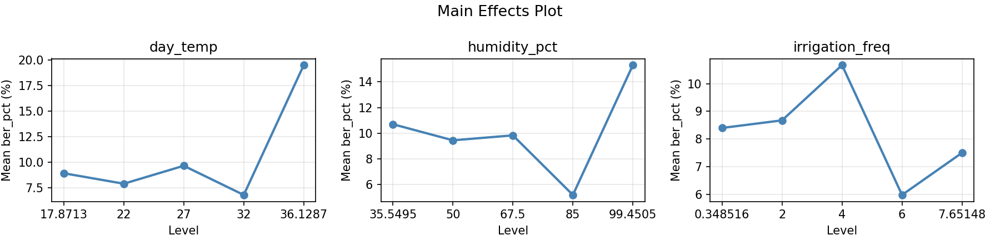
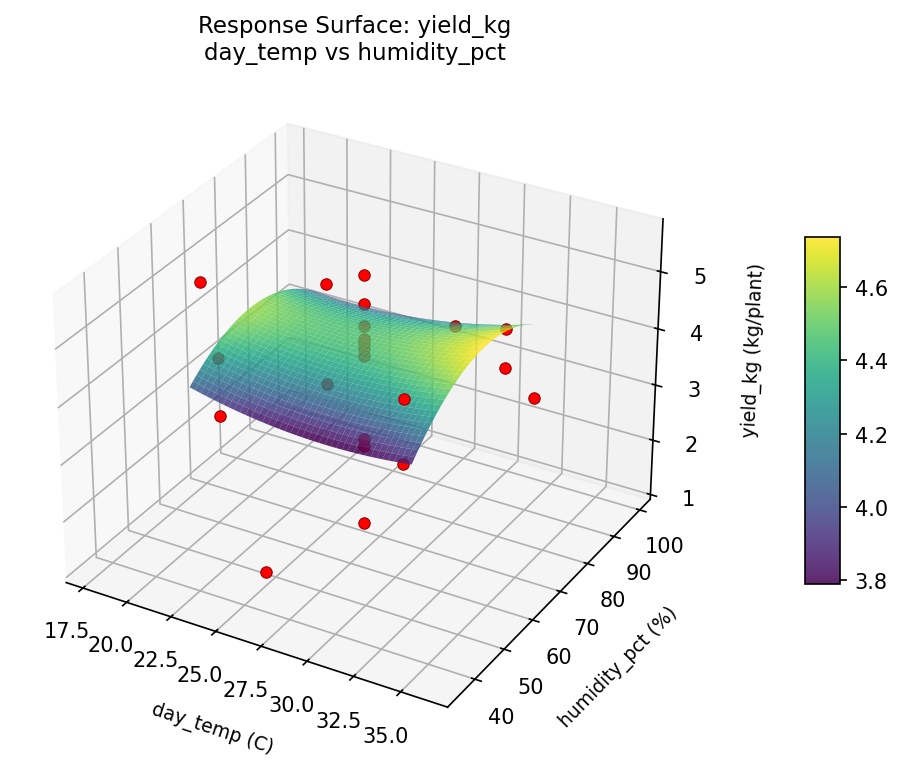

Experimental Setup
Factors
| Factor | Low | High | Unit |
|---|---|---|---|
day_temp | 22 | 32 | C |
humidity_pct | 50 | 85 | % |
irrigation_freq | 2 | 6 | per_day |
Fixed: variety = roma, light_hours = 16
Responses
| Response | Direction | Unit |
|---|---|---|
yield_kg | ↑ maximize | kg/plant |
ber_pct | ↓ minimize | % |
Configuration
use_cases/97_tomato_greenhouse/config.json
{
"metadata": {
"name": "Tomato Greenhouse Yield",
"description": "Central composite design to maximize fruit yield and minimize blossom end rot by tuning temperature, humidity, and irrigation frequency"
},
"factors": [
{
"name": "day_temp",
"levels": [
"22",
"32"
],
"type": "continuous",
"unit": "C"
},
{
"name": "humidity_pct",
"levels": [
"50",
"85"
],
"type": "continuous",
"unit": "%"
},
{
"name": "irrigation_freq",
"levels": [
"2",
"6"
],
"type": "continuous",
"unit": "per_day"
}
],
"fixed_factors": {
"variety": "roma",
"light_hours": "16"
},
"responses": [
{
"name": "yield_kg",
"optimize": "maximize",
"unit": "kg/plant"
},
{
"name": "ber_pct",
"optimize": "minimize",
"unit": "%"
}
],
"settings": {
"operation": "central_composite",
"test_script": "use_cases/97_tomato_greenhouse/sim.sh"
}
}
Experimental Matrix
The Central Composite Design produces 22 runs. Each row is one experiment with specific factor settings.
| Run | day_temp | humidity_pct | irrigation_freq |
|---|---|---|---|
| 1 | 27 | 67.5 | 4 |
| 2 | 32 | 50 | 6 |
| 3 | 22 | 85 | 2 |
| 4 | 27 | 99.4505 | 4 |
| 5 | 27 | 67.5 | 4 |
| 6 | 17.8713 | 67.5 | 4 |
| 7 | 27 | 67.5 | 0.348516 |
| 8 | 27 | 67.5 | 4 |
| 9 | 32 | 85 | 2 |
| 10 | 36.1287 | 67.5 | 4 |
| 11 | 27 | 67.5 | 4 |
| 12 | 27 | 35.5495 | 4 |
| 13 | 27 | 67.5 | 4 |
| 14 | 22 | 50 | 6 |
| 15 | 27 | 67.5 | 4 |
| 16 | 32 | 50 | 2 |
| 17 | 27 | 67.5 | 7.65148 |
| 18 | 32 | 85 | 6 |
| 19 | 27 | 67.5 | 4 |
| 20 | 22 | 50 | 2 |
| 21 | 22 | 85 | 6 |
| 22 | 27 | 67.5 | 4 |
Step-by-Step Workflow
1
Preview the design
Terminal
$ python doe.py info --config use_cases/97_tomato_greenhouse/config.json
2
Generate the runner script
Terminal
$ python doe.py generate --config use_cases/97_tomato_greenhouse/config.json \
--output use_cases/97_tomato_greenhouse/results/run.sh --seed 42
3
Execute the experiments
Terminal
$ bash use_cases/97_tomato_greenhouse/results/run.sh
4
Analyze results
Terminal
$ python doe.py analyze --config use_cases/97_tomato_greenhouse/config.json
5
Get optimization recommendations
Terminal
$ python doe.py optimize --config use_cases/97_tomato_greenhouse/config.json
6
Generate the HTML report
Terminal
$ python doe.py report --config use_cases/97_tomato_greenhouse/config.json \
--output use_cases/97_tomato_greenhouse/results/report.html
Features Exercised
| Feature | Value |
|---|---|
| Design type | central_composite |
| Factor types | continuous (all 3) |
| Arg style | double-dash |
| Responses | 2 (yield_kg ↑, ber_pct ↓) |
| Total runs | 22 |
Analysis Results
Generated from actual experiment runs using the DOE Helper Tool.
Response: yield_kg
Top factors: irrigation_freq (50.5%), humidity_pct (33.5%), day_temp (16.0%).
Pareto Chart

Main Effects Plot

Response: ber_pct
Top factors: day_temp (46.2%), humidity_pct (36.7%), irrigation_freq (17.1%).
Pareto Chart

Main Effects Plot

Response Surface Plots
3D surfaces fitted with quadratic RSM. Red dots are observed data points.
ber pct day temp vs humidity pct

ber pct day temp vs irrigation freq

ber pct humidity pct vs irrigation freq

yield kg day temp vs humidity pct

yield kg day temp vs irrigation freq

yield kg humidity pct vs irrigation freq

Full Analysis Output
doe analyze
RSM surface: rsm_yield_kg_day_temp_vs_humidity_pct.png
RSM surface: rsm_yield_kg_day_temp_vs_irrigation_freq.png
RSM surface: rsm_yield_kg_humidity_pct_vs_irrigation_freq.png
RSM surface: rsm_ber_pct_day_temp_vs_humidity_pct.png
RSM surface: rsm_ber_pct_day_temp_vs_irrigation_freq.png
RSM surface: rsm_ber_pct_humidity_pct_vs_irrigation_freq.png
=== Main Effects: yield_kg ===
Factor Effect Std Error % Contribution
--------------------------------------------------------------
irrigation_freq 3.2200 0.2305 50.5%
humidity_pct 2.1325 0.2305 33.5%
day_temp 1.0175 0.2305 16.0%
=== Summary Statistics: yield_kg ===
day_temp:
Level N Mean Std Min Max
------------------------------------------------------------
17.8713 1 4.7000 0.0000 4.7000 4.7000
22 4 3.6825 0.9130 2.4700 4.4900
27 12 3.7267 1.3401 1.2300 5.5900
32 4 4.0750 0.5350 3.6000 4.7000
36.1287 1 4.3000 0.0000 4.3000 4.3000
humidity_pct:
Level N Mean Std Min Max
------------------------------------------------------------
35.5495 1 1.9400 0.0000 1.9400 1.9400
50 4 4.0725 0.6108 3.5000 4.7000
67.5 12 4.0367 1.2261 1.2300 5.5900
85 4 3.6850 0.8657 2.4700 4.3400
99.4505 1 3.3400 0.0000 3.3400 3.3400
irrigation_freq:
Level N Mean Std Min Max
------------------------------------------------------------
0.348516 1 2.7400 0.0000 2.7400 2.7400
2 4 3.3075 0.5622 2.4700 3.6600
4 12 4.1458 1.0320 1.9400 5.5900
6 4 4.4500 0.1903 4.2700 4.7000
7.65148 1 1.2300 0.0000 1.2300 1.2300
=== Main Effects: ber_pct ===
Factor Effect Std Error % Contribution
--------------------------------------------------------------
day_temp 12.7250 0.8215 46.2%
humidity_pct 10.1000 0.8215 36.7%
irrigation_freq 4.7000 0.8215 17.1%
=== Summary Statistics: ber_pct ===
day_temp:
Level N Mean Std Min Max
------------------------------------------------------------
17.8713 1 8.9000 0.0000 8.9000 8.9000
22 4 7.8750 3.9483 4.3000 13.5000
27 12 9.6333 2.3639 7.5000 15.3000
32 4 6.7750 4.6385 1.8000 12.9000
36.1287 1 19.5000 0.0000 19.5000 19.5000
humidity_pct:
Level N Mean Std Min Max
------------------------------------------------------------
35.5495 1 10.7000 0.0000 10.7000 10.7000
50 4 9.4500 4.4852 4.3000 13.5000
67.5 12 9.8333 3.3794 7.5000 19.5000
85 4 5.2000 2.3986 1.8000 7.2000
99.4505 1 15.3000 0.0000 15.3000 15.3000
irrigation_freq:
Level N Mean Std Min Max
------------------------------------------------------------
0.348516 1 8.4000 0.0000 8.4000 8.4000
2 4 8.6750 5.5716 1.8000 13.5000
4 12 10.6750 3.5709 7.5000 19.5000
6 4 5.9750 1.4175 4.3000 7.2000
7.65148 1 7.5000 0.0000 7.5000 7.5000
Pareto chart (yield_kg): use_cases/97_tomato_greenhouse/results/analysis/pareto_yield_kg.png
Pareto chart (ber_pct): use_cases/97_tomato_greenhouse/results/analysis/pareto_ber_pct.png
Main effects (yield_kg): use_cases/97_tomato_greenhouse/results/analysis/main_effects_yield_kg.png
Main effects (ber_pct): use_cases/97_tomato_greenhouse/results/analysis/main_effects_ber_pct.png
Optimization Recommendations
doe optimize
=== Optimization: yield_kg ===
Direction: maximize
Best observed run: #18
day_temp = 22
humidity_pct = 50
irrigation_freq = 6
Value: 5.59
RSM Model (linear, R² = 0.0312, Adj R² = -0.1302):
Coefficients:
intercept +3.8523
day_temp -0.1581
humidity_pct -0.0910
irrigation_freq +0.1376
RSM Model (quadratic, R² = 0.5970, Adj R² = 0.2948):
Coefficients:
intercept +3.4016
day_temp -0.1581
humidity_pct -0.0910
irrigation_freq +0.1376
day_temp*humidity_pct -0.5937
day_temp*irrigation_freq -0.7288
humidity_pct*irrigation_freq -0.6212
day_temp^2 +0.0533
humidity_pct^2 +0.2498
irrigation_freq^2 +0.3728
Curvature analysis:
irrigation_freq coef=+0.3728 convex (has a minimum)
humidity_pct coef=+0.2498 convex (has a minimum)
day_temp coef=+0.0533 negligible curvature
Notable interactions:
day_temp*irrigation_freq coef=-0.7288 (antagonistic)
humidity_pct*irrigation_freq coef=-0.6212 (antagonistic)
day_temp*humidity_pct coef=-0.5937 (antagonistic)
Predicted optimum (from quadratic model):
day_temp = 22
humidity_pct = 50
irrigation_freq = 6
Predicted value: 5.2206
Model quality: Moderate fit — use predictions directionally, not precisely.
Factor importance:
1. irrigation_freq (effect: 1.6, contribution: 44.6%)
2. day_temp (effect: 1.0, contribution: 27.9%)
3. humidity_pct (effect: 1.0, contribution: 27.5%)
=== Optimization: ber_pct ===
Direction: minimize
Best observed run: #21
day_temp = 32
humidity_pct = 85
irrigation_freq = 2
Value: 1.8
RSM Model (linear, R² = 0.0286, Adj R² = -0.1333):
Coefficients:
intercept +9.2091
day_temp +0.6052
humidity_pct -0.3012
irrigation_freq +0.3878
RSM Model (quadratic, R² = 0.1580, Adj R² = -0.4736):
Coefficients:
intercept +10.0538
day_temp +0.6052
humidity_pct -0.3012
irrigation_freq +0.3878
day_temp*humidity_pct -0.1500
day_temp*irrigation_freq +0.7750
humidity_pct*irrigation_freq +0.8750
day_temp^2 +0.1326
humidity_pct^2 -1.1724
irrigation_freq^2 -0.2274
Curvature analysis:
humidity_pct coef=-1.1724 concave (has a maximum)
irrigation_freq coef=-0.2274 concave (has a maximum)
day_temp coef=+0.1326 convex (has a minimum)
Notable interactions:
humidity_pct*irrigation_freq coef=+0.8750 (synergistic)
day_temp*irrigation_freq coef=+0.7750 (synergistic)
Predicted optimum (from linear model):
day_temp = 32
humidity_pct = 50
irrigation_freq = 6
Predicted value: 10.5032
Model quality: Weak fit — consider adding center points or using a different design.
Factor importance:
1. day_temp (effect: 8.0, contribution: 48.7%)
2. irrigation_freq (effect: 5.1, contribution: 31.2%)
3. humidity_pct (effect: 3.3, contribution: 20.1%)